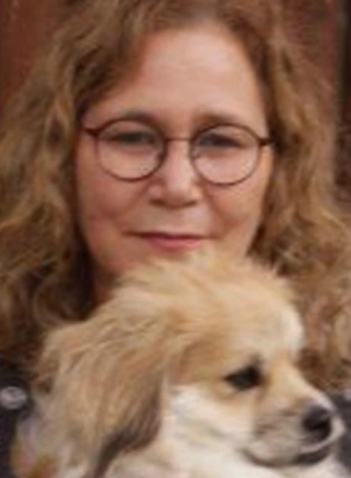

כפר עזה
אדמוני מיכל ז"ל
סופרת, מרצה, מאמנת ואשת השראה
סיפור חיים
מיכל, בתם של שולמית ואהרון, נולדה ביום י״ט באייר תשכ״ו (9.5.1966) בקיבוץ בית קשת בגליל. הילדה השלישית במשפחה שבה ארבעה ילדים. אחות של ניר, מרים ורות.
כשהייתה בת חמש עברה עם משפחתה למושב עין ורד בשרון, שבו גדלה אימה. מיכל התבגרה שם ולמדה בבית הספר היסודי במתחם ״מדרשת רופין״ ובהמשך עברה לכפר הנוער ״כפר גלים״ הסמוך לחיפה וסיימה שם את לימודיה התיכוניים.
לאחר סיום לימודיה התגייסה לצבא ושירתה בגרעין נח״ל בקיבוץ עברון.
אחרי שחרורה מהצבא מיכל הדריכה בני נוער במסגרת ״קרן קיימת לישראל״ ובמשך השנים עבדה במסגרות נוספות.
היא רצתה לעבוד בתפקיד ערכי ומאתגר, וכך הגיעה לקיבוץ כפר עזה ושימשה שם כמדריכת נוער.
בקיבוץ פגשה את דורון אדמוני, בן המקום, והשניים הפכו לזוג, נישאו והקימו שם את ביתם. נולדו להם ילדיהם גיא וגלי, ומיכל נודעה כאימא אוהבת ומסורה, גם לילדיו של דורון מנישואיו הראשונים, רן ולי, שהיא הייתה מעורבת בגידולם. ״אימא לביאה שעשתה למען ילדיה הכול״, העידו חבריה, ולי סיפרה שלמיכל ״הייתה יכולת מדהימה להקשיב מצד אחד וגם להגיד את הדבר הנכון, לחזק ולתמוך״.
מיכל עבדה ברפת הקיבוץ ובהמשך שימשה כמבקרת איכות במעבדה של המפעל המקומי ״כפרית״, המייצר חומרי גלם לתעשיית הפלסטיק.
בתחילת שנות האלפיים, הליך רפואי שעברה הסתבך והותיר אותה נכה ומיוסרת. במשך חצי שנה עברה שיקום במרכז הרפואי ״בית לוינשטיין״, ואחריו חזרה לכפר עזה. בקיבוץ נמשך תהליך השיקום המאומץ שלה, והיא התניידה בעזרת כיסא גלגלים ובהמשך נעזרה בקביים.
כעבור שנה מיכל עברה תסחיף ריאתי ובמשך עשרה ימים אושפזה בבית חולים במצב קשה כשהיא מורדמת ומונשמת, עד שנרפאה ושבה לביתה.
מיכל, שאהבה לכתוב מאז ומעולם, גילתה בעקבות נכותה את כוח הריפוי שבכתיבה. כאשר כאביה העירו אותה משנתה מדי לילה, נהגה לקום ממיטתה בשעה ארבע לפנות בוקר ולכתוב במרפסת ביתה. המילים שלה, שהתחילו כפוסטים מרגשים בפייסבוק וזכו בתגובות נלהבות, הפכו לספרה הראשון - ״רציתי צבעים בהירים״, שיצא לאור בשנת 2018. היה זה רומן אופטימי על אישה שעברה תאונת דרכים ובו שזרה מוטיבים מחייה.
יציאתו לאור וההערכה שזכתה לה בעקבותיו מילאו אותה באושר ובסיפוק, וגם הזרימו אליה אנרגיות של עשייה. ״היא הייתה מאוד פעילה ומלאת תעוזה. אפשר לומר שהמציאה את עצמה מחדש״, סיפר דורון בן זוגה.
מיכל למדה אימון רפואי, התמחתה בהעצמה של נגמלים מסמים, טיפלה באנשים שחוו משברים והדריכה אותם בעמותות ובביטוח הלאומי.
בנוסף, היא הרצתה בהתנדבות על התמודדות עם נכות במכללה לשיקום ״גל לוינשטיין״, ובהמשך הנחתה שם קבוצות. על עבודתה במכללה סיפרה: ״אנחנו מנסים להחזיר את הניצוץ לאנשים שכבה בהם האור. להביא אנשים לחשוב כמה דברים נפלאים יש בנו למרות הנכות. כמה אנחנו יכולים לצמוח ממשבר ואיך ניתנה לנו האפשרות, והיא החשובה מכולם, להמציא את עצמנו מחדש״.
הרצאותיה על הספר שלה משכו אנשים מכל קצות הארץ ותובנותיה השזורות בשמחת החיים שלה העניקו השראה לרבים.
מיכל אהבה לטייל עם משפחתה בארץ ובחו״ל והתענגה על החיים, גם באמצעות המוזיקה שכה אהבה להאזין לה. את מרפסת ביתה כינתה ״המרפסת הטיפולית״ ורבים מתושבי כפר עזה נהרו אליה כדי לשוחח איתה שם ולקבל חיבוק או עצה חמה ואוהבת. חברתה סיפרה שהיא הייתה ״אישיות חד פעמית עם לב ענק ורך, שיעול צרוד מסיגריות, צחוק מתגלגל, עיניים בוהקות מרגש ויכולת מופלאה להשתמש במילים בשילוב נדיר של רומנטיקה חסרת תקנה והומור שחור״.
בשנת 2021 יצא לאור ספרה השני, ״באת אליי״, שגם הוא עוסק באישה המנצחת את נכותה. על אף הנושאים הלא פשוטים שבספריה, הם מלאים בהומור, באהבה ובתשוקה ומתייחסים לשבר הגוף והנפש מנקודת מבט של צמיחה.
למיכל היה חשוב במיוחד להנחיל ערכים כמו הגשמת חלומות וסירוב להיכנע למציאות קשה. בין השאר כתבה: ״אנחנו לא אחראים לקלפים שמחלקים לנו, אבל אנחנו בוחרים איך לשחק בהם, ואיך שנשחק איתם, ככה ייראו חיינו. החיים שלי היטלטלו כאילו היו סירת דייגים באמצע צונמי. הם התפרקו, ואני הרכבתי אותם מחדש כך שיתאימו לי במדויק. זה לא היה פשוט ולא קרה ברגע. לקח לי ארבע שנים להבין לאן אני רוצה ללכת. להביא את האופטימיות ואת הכוחות שבי לידי ביטוי ולתת לאחרים כוחות להמשיך הלאה, באומץ. נלקחו ממני המון דברים, ויחד עם זאת קיבלתי מתנות שלא הייתי מקבלת לולא מה שקרה לי. אני חיה חיים שלמים ומאושרים בדיוק כמו שאני רוצה. אל תפחדו לפרוץ גבולות, לשבור מסגרות, לבחור בדרך שנכונה רק לכם. אל תפחדו להגשים חלומות״.
ספריה של מיכל זכו להצלחה ולאהבת הקוראים. בחודשים האחרונים לחייה היא סיימה לכתוב את ספרה השלישי, אך לא זכתה לראותו יוצא לאור.
בשבת, כ״ב בתשרי, שמחת תורה תשפ״ד, 7 באוקטובר 2023, חדרו מחבלים לקיבוץ כפר עזה במסגרת מתקפת הטרור על יישובי עוטף עזה. בבוקר זה החלה מלחמה.
מיכל, שלא חשה בטוב, ביקשה מבנה גיא שהיה בחופשת שחרור מהצבא לשהות עימה בבית המשפחה בשמחת תורה. כאשר נשמעה האזעקה הראשונה שניהם נכנסו לממ״ד. בשעה שש וחצי בבוקר היא כתבה לדורון בן זוגה, שהיה בחו״ל, שיש המון פיצוצים בקיבוץ ושהכלב שלהם ברח מהבית. כעבור כמה דקות אבד הקשר איתם.
מחבלים שהגיעו לכפר עזה נכנסו לממ״ד המשפחה ורצחו את מיכל ואת גיא. במשך ארבעה ימים הם הוגדרו כמנותקי קשר עד שלבסוף אותרו מחובקים, ללא רוח חיים, בממ״ד של הבית. סיפר דורון: ״ידעתי שככה ימצאו אותם. אם למות יחד, אז רק ככה, מחובקים. היא לא עזבה אותו בחייה והוא לא עזב אותה גם במותם״.
מיכל אדמוני נרצחה על ידי מחבלים בכפר עזה ביום כ״ב בתשרי תשפ״ד (7.10.2023). בת חמישים ושבע בהירצחה. היא הובאה למנוחות בבית העלמין בתל מונד, בחלקה הצבאית לצד בנה גיא. הותירה אחריה בעל ובת, אח ושתי אחיות.
ספדה לה בתה גלי: ״גדלתי עם אימא נכה שסובלת מכאבים ותמיד החזקנו לה את היד, גם בנשימותיה האחרונות. בשישי בלילה התלבטתי אם לנסוע מחוץ לקיבוץ ואמרת לי בדמעות 'תלכי'. אימא, תודה שהצלת אותי והשארת אותי בחיים. לימדת אותנו לחלום ולהגשים״.
כתבה רקפת חברת ילדותה: ״מיכלי, כמה את חסרה לי. לעצה, למילה טובה, לאמרה שנונה, לצחוק... מאז שנרצחת אין לי אומץ לחזור ולשמוע אותך מגיבה בקולך הרגוע, השלו ומצד שני הכל כך עוצמתי״.
ביולי 2024 נערך במרכז הספורט ״נחלת יהודה״ בראשון לציון טורניר שער הנגב בכדורסל לזכר גיא ומיכל.
המשפחה החליטה על הקמת יקב ומרכז מבקרים בכפר עזה לזכרם של מיכל וגיא, ורכשה בית ביוון שמיכל אהבה כדי להפוך אותו למקום לזכרם.
מיכל מונצחת באתר האינטרנט של ״מאגר הסופרים והמשוררים״, שבו קישורים לכתבות עליה ועל יצירתה.